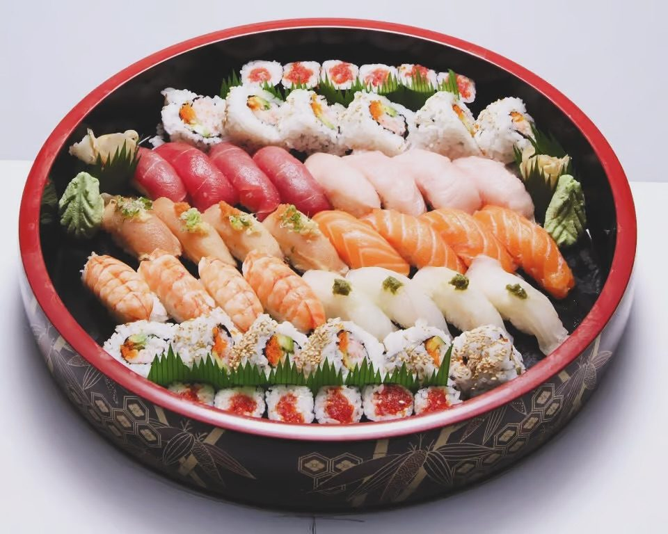
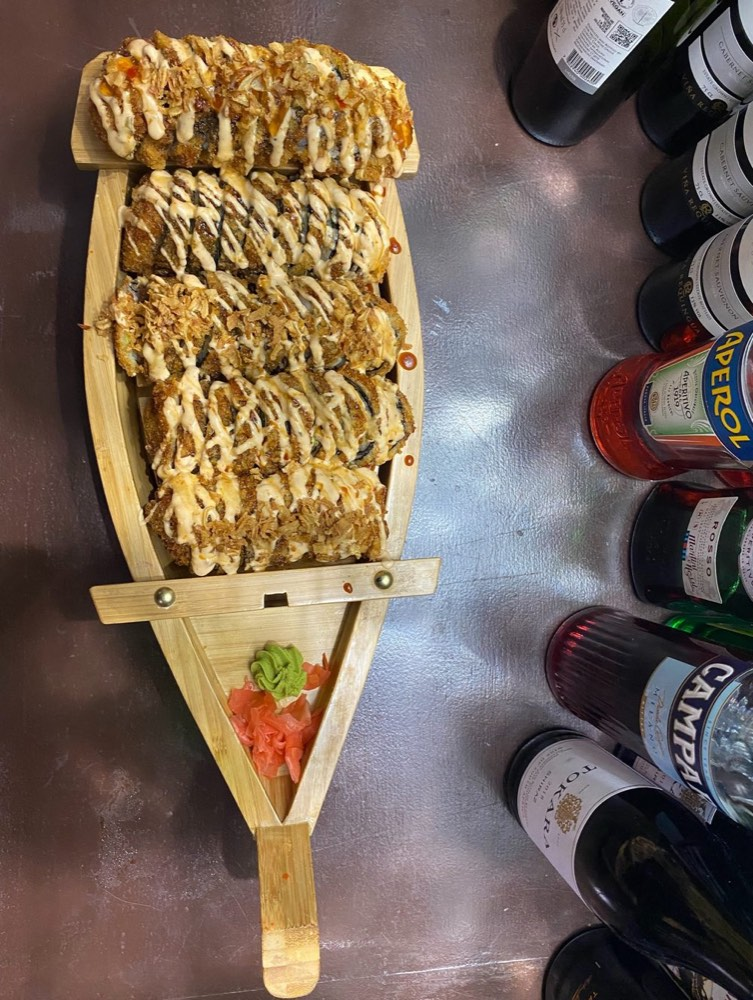
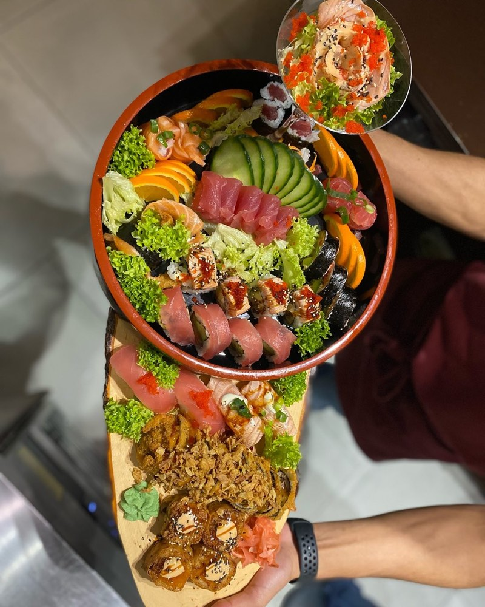
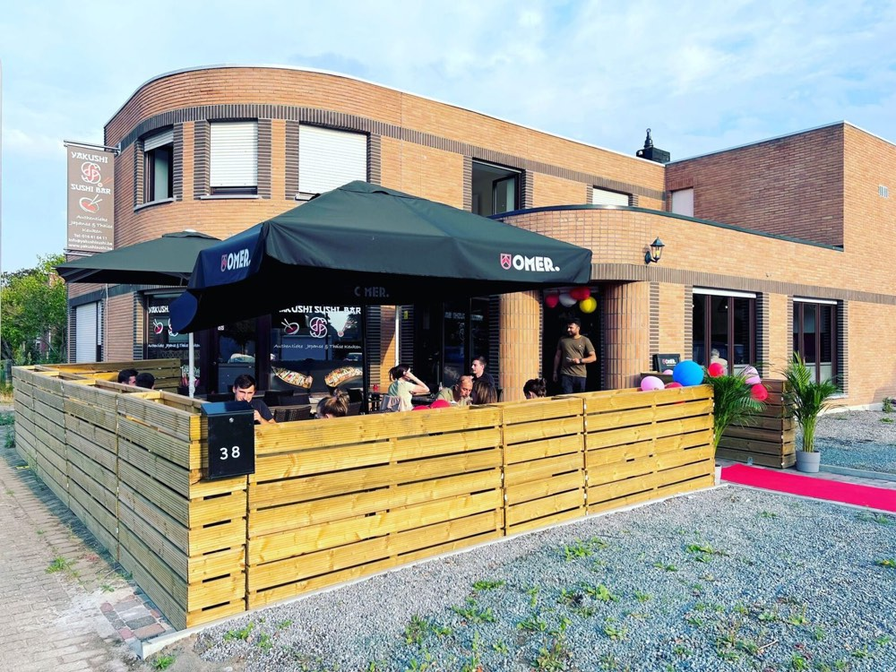
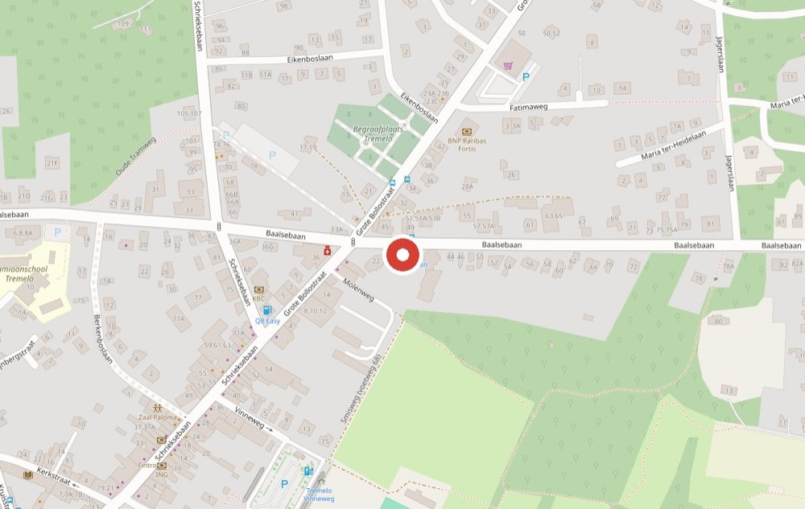

Thaise rode curry
Kip, scampi, rund of vegi, in kokosmelk met bamboescheuten.
Zin in sushi thuis?
Bestel online en haal af aan de Baalsebaan. Kies zelf het uur waarop u langskomt.
Online bestellen →
Yakushi Sushi Bar · Tremelo
Verse smaken van de zee, kunstig gerold op je bord. Japanse en Thaise keuken aan de Baalsebaan 38: eet in de zaal of op het terras, haal af, of bestel online.
Onze signatuur
Een houten boot vol rolls, nigiri en sashimi, of een grote ronde schaal: zo komt sushi bij Yakushi op tafel. Voor uzelf, voor twee, of voor het hele gezin.





Sushiboten
Een assortiment van sushi, sashimi en nigiri: van een boot voor één tot de Titanic deluxe voor vier. Rond de feestdagen bestelt u best een paar dagen op voorhand.
Fusion boten en combo's


Over Yakushi
Yakushi is een sfeervol en toegankelijk restaurant op loopafstand van Tremelo centrum. We combineren de klassieke en de hedendaagse Japanse keuken met de Thaise. Prijs-kwaliteit ligt ons aan het hart: we willen elke liefhebber verwennen met goed Japans eten, in een ongedwongen sfeer.
Ons geheim? We werken alleen met verse, traditionele ingrediënten. En dat proeft u!
Klantvriendelijkheid vinden we even belangrijk. Zeg ons gerust wat u ervan vond, aan tafel of op Facebook.
Niet alleen sushi
Liever iets warms? Elke schotel komt met rijst of noedels, en wie houdt van gebakken rijst of noedels, vraagt het er gewoon bij.
Kip, scampi, rund of vegi, in kokosmelk met bamboescheuten.
Met diverse groenten en chefsaus, op rijst of noedels.
Platte rijstnoedels met kip, rund, scampi of vegi.
Kip, zalm, rund of crispy eend, met gebakken groenten.
Tussen de dimsum op onze kaart staat er een uit de Himalaya: momo, gevuld met kip. Per zes of per twaalf.
Actueel
Speciale momenten in het jaar, met een sushiboot of een menu voor twee.
Feestdagen
Rond kerst en oudjaar is het druk in de keuken. Bestel online een paar dagen op voorhand en kies zelf de dag en het uur waarop u afhaalt.
Elk jaar in februari
Met Valentijn staat er een menu voor twee klaar: twee glazen cava, miso soep en dimsum, daarna teriyaki crispy kip of een Love Boat, en dame blanche als dessert.
Reserveren
Reserveer telefonisch op 016 41 64 11. Liever thuis eten? Bestel online en haal af aan de Baalsebaan.
Veelgestelde vragen
Afhalen, reserveren of vegetarisch eten? Hier vindt u de antwoorden. Staat uw vraag er niet bij, bel ons gerust op 016 41 64 11.
Van dinsdag tot en met zondag, telkens van 16:30 tot 21:30. Op maandag zijn we gesloten.
Ja. Bestel online of bel 016 41 64 11 en haal uw bestelling af aan de Baalsebaan 38 in Tremelo.
Bel ons op 016 41 64 11. U kunt binnen in de zaal eten of op ons terras.
Ja. De Thaise rode curry, de wok en de pad Thai bestaan ook in een vegi-versie, en op de kaart staan ook avocado-rolls.
Ja. Bestel online een paar dagen op voorhand en kies zelf de dag en het uur waarop u afhaalt. Rond kerst en oudjaar raden we dat zeker aan.
Aan de Baalsebaan 38, 3120 Tremelo, op loopafstand van Tremelo centrum en vlakbij Baal, Haacht, Keerbergen en Rotselaar.
Langskomen
Op loopafstand van Tremelo centrum en vlakbij Baal, Haacht, Keerbergen en Rotselaar. Zes avonden per week open, maandag zijn we dicht.
AdresYakushi Sushi Bar
Baalsebaan 38, 3120 Tremelo
Telefoon016 41 64 11
E-mailinfo@yakushisushi.be
Plan uw route